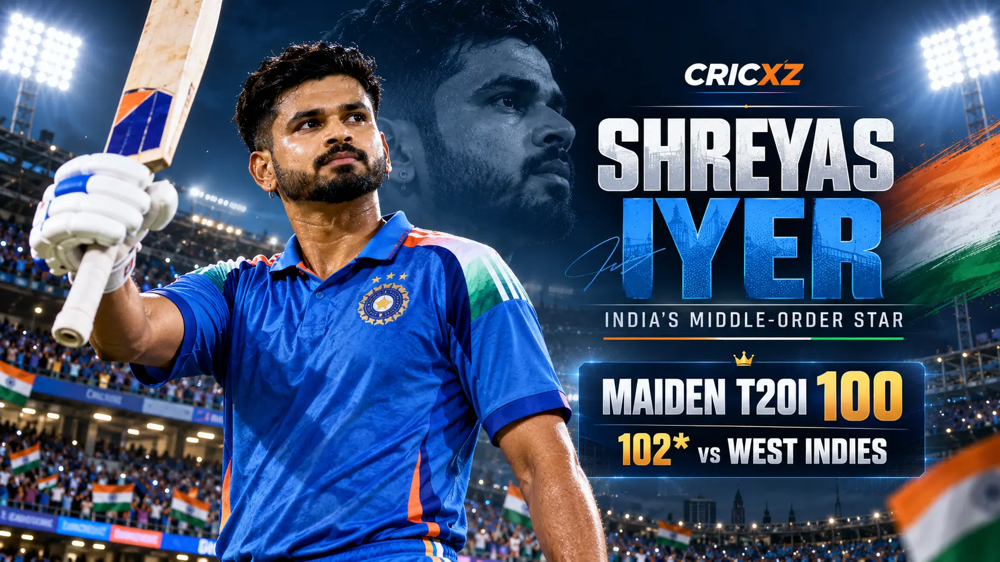
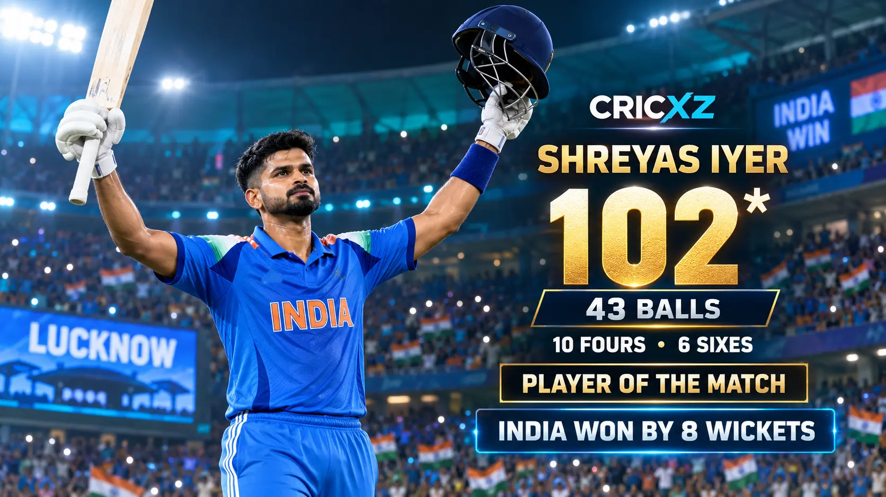

Test Career
- Matches
- 14
- Runs
- 811
- Batting average
- 36.86
- Highest score
- 105
- Hundreds / Fifties
- 1 / 5

Shreyas Iyer is a right-handed middle-order batter with more than 5,500 international runs. He scored a century on Test debut, played a major role in India's 2025 Champions Trophy triumph and struck an unbeaten 102 against West Indies in October 2026.
Career statistics are current through 6 October 2026.
Iyer remains an active international player, so these figures may change after his next appearance. The snapshot includes his unbeaten century in the first India–West Indies T20I.
Across Tests, ODIs and T20Is, Iyer has scored 5,562 international runs. His ability to play spin, rebuild an innings and accelerate through the middle overs has made him an important part of India's batting across formats.

Iyer struck an unbeaten 102 from 43 balls in Lucknow on 6 October 2026. He reached his maiden T20I hundred from 42 deliveries, hitting 10 fours and six sixes, and shared an unbroken 137-run partnership with Ishan Kishan.
The innings powered India to 172/2 in 14.4 overs and an eight-wicket victory. Iyer was named Player of the Match. Read the complete India vs West Indies first T20I match report.
Debut: 25 November 2021
Scored 105 against New Zealand at Kanpur on Test debut and followed it with 65 in the second innings.
Debut: 10 December 2017
Developed into a key middle-order batter, passing 3,000 runs with five centuries and 24 fifties.
Debut: 1 November 2017
Registered his maiden T20I century with an unbeaten 102 against West Indies in October 2026.
Scored 102 not out from 43 balls against West Indies in Lucknow.
Made 105 against New Zealand in his first Test innings at Kanpur.
Reached five ODI hundreds while averaging more than 45.
Shared an unbroken 137-run partnership with Ishan Kishan against West Indies.
Top-scored for India during their title-winning 2025 campaign.
Recorded his career-best ODI score against the Netherlands in 2023.
Captained India to the men's cricket gold medal.
Helped India win the ICC Champions Trophy.
Led Kolkata Knight Riders to the IPL championship.
Represented India throughout their run to the World Cup final.
Read the match report from his unbeaten 102, revisit India's Asian Games gold-medal victory, or browse all CricXZ player profiles.